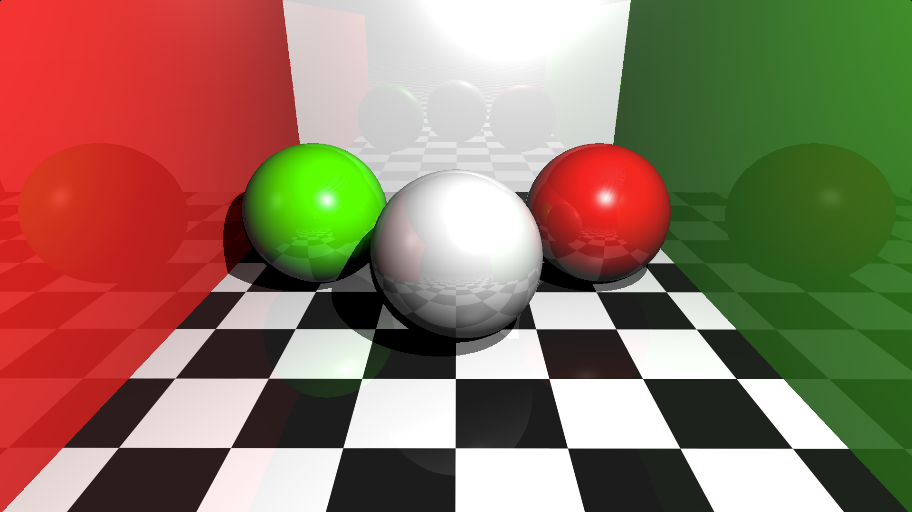

Reflections with ray marching

A Cornell Box made entirely with GLSL (The OpenGL Shading Language) using the raymarching algorithm, specifically, the sphere tracing technique. The Cornell Box is a scene used for testing the quality of renderers, now it is also part of the graphics lore. This is a Glossy-recreated Cornell Box rendered entirely with raymarching. The surfaces are assumed to be glossy (perfectly reflective like a mirror) and the reflections are set up for 2 ray bounces by default. Also, the bounces can be modified in the code but be aware that more bounces mean less perfomance (fps). I wanted to create this with the objective of imitating the effects that a regular raytracing does but with raymarching. Currently, the program runs in realtime (>30fps) in a 800x450 resolution, try going fullscreen here!.
Disclaimer: This is not how a rendering algorithm should work, specially offline renderers that use ray tracing/path tracing but this was a fun project to do and I guess there still exists room for more optimization.